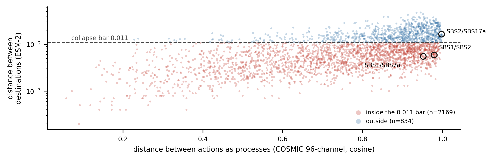
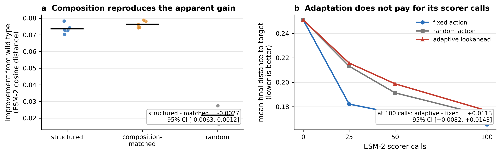
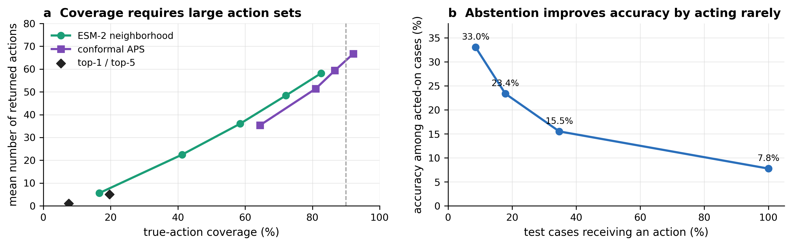
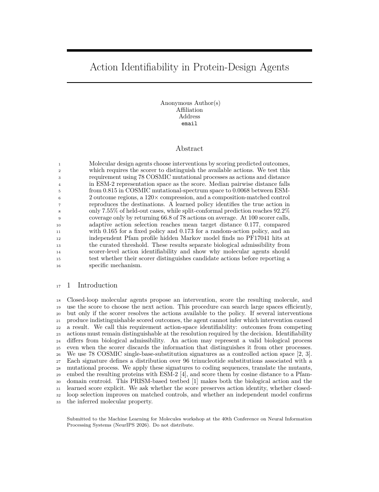
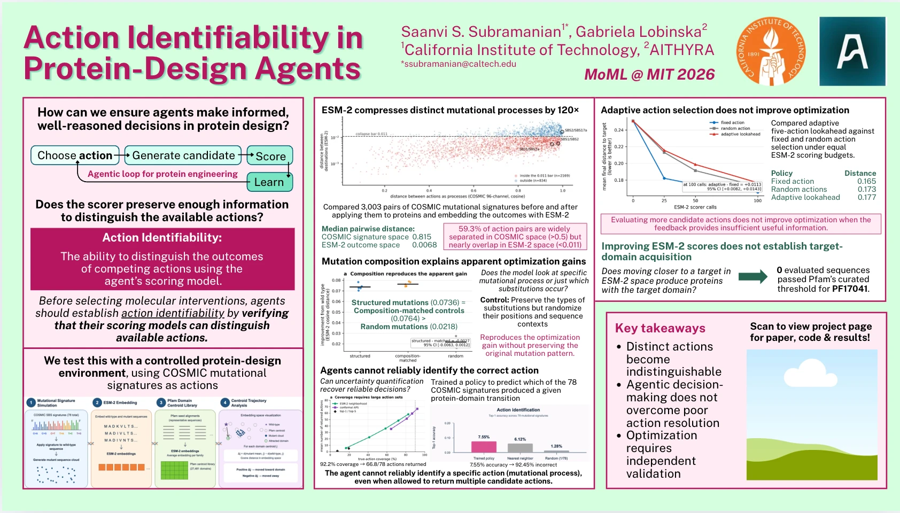

1California Institute of Technology 2AITHYRA
A closed-loop molecular agent proposes an intervention, scores the resulting molecule, and uses the score to choose what to do next. The loop only works if the scorer can tell the available interventions apart. If several distinct actions produce indistinguishable scored outcomes, the agent cannot know which one caused a result — and any mechanism it reports afterwards is a guess dressed as an inference.
The ability to distinguish the outcomes of competing actions using the agent's own scoring model.
Identifiability is not the same as biological admissibility. An action can represent a perfectly valid biological process while the scorer quietly discards everything that distinguishes it from the others. Before selecting molecular interventions, agents should establish action identifiability by verifying that their scoring model can separate the actions available to them.
We need an action space where the ground-truth distinctions are known independently of any learned model. COSMIC single-base-substitution signatures give us exactly that: each signature is a distribution over 96 trinucleotide substitution types, catalogued from real mutational processes, with its own model-free parameterization.
The loop runs as follows. An action is a signature s. Executing it on a coding sequence samples compatible substitutions and produces a mutant, which we translate, embed with ESM-2, and score by cosine distance to a target Pfam-domain centroid — lower is better. This gives us both halves of the comparison: how far apart two actions are as processes, and how far apart their outcomes are after scoring.
Across all 3,003 pairs of COSMIC signatures, the median distance between native 96-channel spectra is 0.815. The median distance between the same actions' ESM-2 outcome regions is 0.0068. The scored action space is roughly two orders of magnitude tighter than the space the actions actually live in.
1,780 of 3,003 pairs (59.3%) are more than 0.5 apart in COSMIC space but fall within 0.011 of each other after scoring. SBS1 and SBS7a — clock-like ageing and UV exposure, about as biologically distinct as two processes get — are 0.952 apart as spectra and 0.0055 apart as outcomes.

A composition-matched control pins down why. Scrambling trinucleotide context and mutation placement while preserving the realized substitution composition reproduces each action's ESM-2 destination to within cosine distance 0.02. Actions with similar broad substitution patterns collapse together, and the same pattern appears at both ESM-2 8M and 650M. The agent has 78 nominal actions and a far coarser effective action space underneath.
On the PF17041 target, the structured action looks like it works. It reduces ESM-2 distance by 0.0736 ± 0.0030 across five seeds, against 0.0218 ± 0.0051 for edit-count-matched random mutation — an improvement of 0.0519, 95% CI [0.0477, 0.0573]. That is the result a design paper would report.
Then composition matching erases it. Reapplying the same amino-acid substitution multiset at random positions produces 0.0764, against 0.0736 for the structured action.
| Proposal arm | Target improvement | What it preserves |
|---|---|---|
| Composition-matched control | 0.0764 | Substitution composition only |
| Structured COSMIC action | 0.0736 | Composition, context, and placement |
| Edit-count-matched random | 0.0218 | Edit count only |
The paired difference between the structured action and its composition-matched control is −0.0027, 95% CI [−0.0063, 0.0012]. We find no evidence that trinucleotide context or mutation placement — the things that actually define a mutational signature — add steering power beyond the substitution composition ESM-2 already preserves.
Scorer feedback adds nothing either. An unselected drift control scores every proposal and then accepts it regardless of the score. It improves target distance by 0.0737, against 0.0736 under Metropolis selection. The same holds for the random arm: 0.0236 unselected against 0.0218 selected. Whatever the loop is getting, it is getting from the proposal distribution, not from the feedback.

Giving the agent more candidates to evaluate does not rescue it. At a budget of 100 ESM-2 scorer calls, five-action one-step lookahead reaches a mean target distance of 0.177, which is worse than both baselines.
| Policy at 100 scorer calls | Mean distance to target |
|---|---|
| Fixed action | 0.165 |
| Random action selection | 0.173 |
| Adaptive five-action lookahead | 0.177 |
Adaptive is worse than the fixed policy by +0.0113, 95% CI [+0.0082, +0.0143], and worse than random by +0.0042, 95% CI [+0.0021, +0.0057]. Lookahead spends scorer calls on comparisons the scorer cannot resolve, and pays for them in lost transitions. Evaluating more candidate actions does not improve optimization when the feedback carries too little usable information.
We trained a supervised policy on 35,403 realized Pfam-domain transitions to predict which of the 78 COSMIC signatures produced a given transition. On a protein-grouped split it reaches 7.55% top-1 accuracy, against 6.12% for a nearest-neighbor baseline and 1.28% for uniform chance. Measured against a train-only per-(origin, target) frequency lookup, the policy's edge is +0.93 percentage points, 95% CI [+0.71, +1.27].
So the policy does carry real information about action choice — and it still predicts the wrong action in 92.45% of held-out cases. It also fails to generalize: holding out complete COSMIC processes drops top-1 to 0.8%, below the 1.3% uniform baseline, and holding out SBS17a yields 0% recovery. The model interpolates among action classes it saw during training rather than learning what a signature is.

Set-valued prediction buys coverage by giving up specificity. Adaptive prediction sets reach 92.2% coverage but return 66.8 of 78 actions on average, with a median set size of 78 — the entire catalogue. A direct ESM-2 neighborhood reaches 82.6% coverage at a mean set size of 58.2. Abstention produces smaller outputs, but retaining 8.6% of test cases still yields only 33.0% conditional accuracy.
This is what a non-identifiable action space looks like from the inside. The honest uncertainty quantification is not wrong — it is correctly reporting that the evidence does not single out an action.
The optimization moves proteins measurably closer to the PF17041 centroid. The obvious question is whether that means anything biologically. We checked with a model that shares nothing with the objective: an independent Pfam profile hidden Markov model, evaluated with HMMER 3 against the PF17041.11 SasG E profile.
Zero evaluated sequences passed Pfam's curated gathering threshold. Under a permissive reporting threshold, none of the five structured-action sequences produces a match at all; other arms produce only weak, non-significant hits, with best E = 0.34.
The evidence supports movement under the ESM-2 objective. It does not support acquisition of PF17041-like sequence properties. These are different claims, and only the first one is measured by the thing the agent optimizes.

Five pages plus appendix, with full methods, bootstrap procedures, and the matched-control definitions.
Read the PDF →action_space_vs_scorer.py cross_signature_steering.py prism_proto_design.py proto_ablation.py inverse_design_classifier.py equivalence_class_policy.py selective_action_interface.py adaptive_policy_multibudget.py validate_designs_hmmer.py
Nine scripts covering the action-space analysis, the optimization loop, every matched control, and the external validation.
Browse the repo →
Seed-level CSVs, paired bootstrap intervals, and the poster as presented at MoML 2026.
See the data files →action_space_vs_scorer.pyAll 78 actions in both spaces: COSMIC 96-channel vs ESM-2 destinationcross_signature_steering.pyApplies COSMIC actions to proteins, measures mean ESM-2 region reachedprism_proto_design.pyThe Metropolis optimization loop at T = 0.02proto_ablation.pyComposition-matched, edit-count-matched, and unselected-drift armsinverse_design_classifier.pyThe supervised policy and its leave-actions-out variantsequivalence_class_policy.pyESM-2 neighborhood sets and the transitive-closure analysisselective_action_interface.pyConformal prediction sets and frozen abstention thresholdsadaptive_policy_multibudget.pyLookahead vs fixed vs random at 25, 50, and 100 scorer callsvalidate_designs_hmmer.pyIndependent PF17041 profile-HMM validation"""Is the action space degenerate, or does the scorer collapse it? Three biochemically distinct actions (SBS1, SBS7a, SBS2) drive proteins to nearly one destination in ESM-2 space. That has a confound four signatures cannot settle: the actions might genuinely be similar, or the SCORER might be unable to resolve differences that exist. This settles it by measuring all 78 actions in BOTH spaces: native space : the COSMIC 96-channel trinucleotide substitution profile, which is the action's own parameterization, independent of any learned model scorer space : the mean final-layer ESM-2 position its mutants reach If the catalogue is well separated natively and compressed in scorer space, the collapse belongs to the scorer. """ # action_space_vs_scorer.py COLLAPSE_BAR = 0.011 # the draft's own collapse criterion, in scorer space
all_seeds_summary.csvPer-seed improvement, accept rate, and length control for all three armspaired_uncertainty.jsonPaired bootstrap intervals and exact randomization p-valuessummary.jsonPolicy top-1 and top-5 against baselines, with protein-cluster bootstrapagent_results.csvPer-protein, per-goal budget trajectories across four Pfam targetsBiological grounding does not guarantee scorer-level identifiability. COSMIC describes genuinely distinct processes; ESM-2 maps many of their outcomes to nearly the same place.
Adaptive selection, lookahead, and uncertainty quantification cannot recover a distinction the scorer has already thrown away.
Movement under an objective is not acquisition of the property the objective stands in for. A model that shares nothing with the objective has to say so.
If the scorer cannot resolve competing actions, the right behavior is to return a useful uncertainty set or abstain — not to name a mechanism.
Scope. These conclusions apply to the action–scorer pair studied here. Other molecular actions or scorers may preserve more mechanistic information, and the point of the three-step recipe is that this is a measurable question rather than an assumption. Methods that steer protein representations are also dual-use, so we restrict the action space to characterized processes and focus on auditing failure modes rather than claiming successful molecular design.